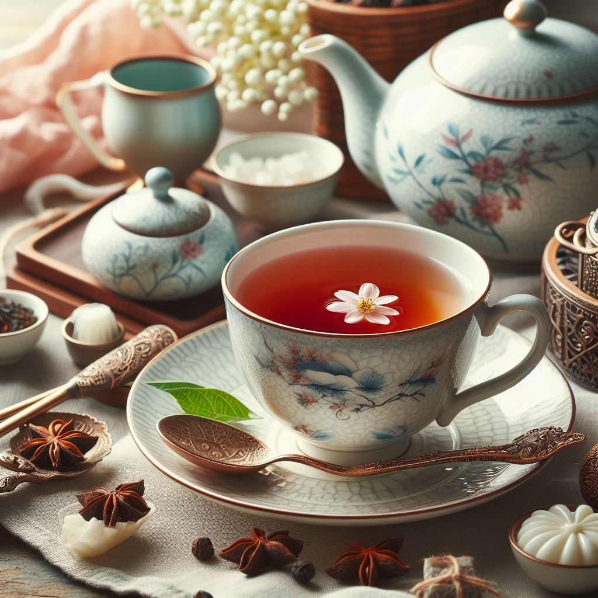

Yaşamın küçük zevkleri, günlük yaşamda bulunan basit ama anlamlı anlardır.
Örneğin: "Ilıman Bir Günün Keyfi: Günbatımında Çay içmek"

Günbatımında bir fincan çay içmek, sıcak içeceğin keyfiyle birleşerek huzur ve dinginlik sağlar. Bu basit zevk, yaşamın küçük mutluluklarına odaklanmanın gücünü temsil eder.